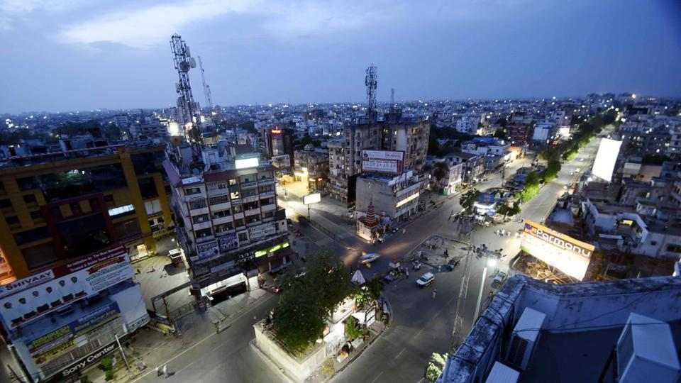
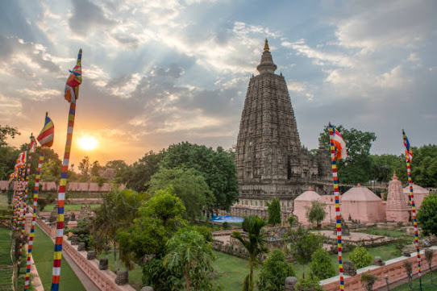
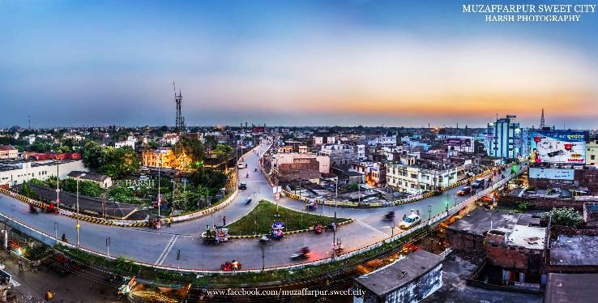

| BIHAR |
|---|
| State of Akonwledge |
| Darbhanga Fort |
|  |
| Patna City |
|  |
| Mahabodhi Temple |
|  |
| Muzaffarpur City |
Bihar is a state in eastern India, bordered by Uttar Pradesh, Nepal, West Bengal, and Jharkhand. It is the second most populous state and the 12th largest by area. The Ganges River divides the state into two parts. The official language is Hindi, with Urdu, Maithili, Magahi, and Bhojpuri widely spoken. Bihar has a high proportion of young people, with nearly 58% of the population below 25 years old. Historically, Bihar was a major center of politics, culture, and learning in ancient India. It was home to the Maurya and Gupta empires and played a crucial role in the spread of Buddhism and Jainism. The region was historically known for its educational institutions, such as Nalanda and Vikramashila. However, Bihar has faced economic challenges since the late 20th century, attributed to government policies and historical factors. Recent governance improvements have led to better infrastructure, education, healthcare, and economic revival. Geographically, Bihar has a fertile plain divided by the Ganges and is prone to flooding. It has a subtropical climate with hot summers and cold winters. The state has a rich variety of flora and fauna, with protected areas like the Valmiki Tiger Reserve and Kanwar Lake Bird Sanctuary. Bihar has played a crucial role in India's history, from the ancient period through the colonial era and India's independence movement. Despite past economic struggles, the state has made significant strides in governance, development, and environmental conservation.
In Ancient and Classical India, the area that is now Bihar was considered the centre of political and cultural power and as a haven of learning.[17] Parshvanatha, the 23rd Tirthankar led the shramana order in this region in 9th century BCE.[18][19][20] Jainism was revived and re-organised by Mahavira, the 24th Tirthankar in 6th century BCE. From Magadha arose India's first empire, the Maurya empire, as well as one of the world's most widely adhered-to religions: Buddhism.[21] Magadha empires, notably under the Maurya and Gupta dynasties, unified large parts of South Asia under a central rule.[22] Another region of Bihar, Mithila, was an early centre of learning and the centre of the Videha kingdom.
However, since the late 1970s, Bihar has lagged far behind other Indian states in terms of social and economic development.[25] Many economists and social scientists claim that this is a direct result of the policies of the central government, such as the freight equalisation policy,[26][27] its apathy towards Bihar,[28] lack of Bihari sub-nationalism,[29] and the Permanent Settlement of 1793 by the British East India Company.[27] The state government has, however, made significant strides in developing the state.[30] Improved governance has led to an economic revival in the state through increased investment in infrastructure,[31] better healthcare facilities, greater emphasis on education, and a reduction in crime and corruption.
The name Bihar is derived from the Sanskrit and Pali word vihāra (Devanagari: विहार), meaning "abode" and usually referred to a Buddhist monastery. The region roughly encompassing the present state had many Buddhist vihāras, the abodes of Buddhist monks in the ancient and medieval periods.
Main article: History of Bihar See also: Timeline for Bihar; Magadha; Mithila Kingdom; History of Buddhism in India; Decline of Buddhism in India; Mithila, India; and List of rulers of Mithila
 |
|
Copy of the seal excavated |
.png) |
|
Mahajanapadas |
Chirand, on the northern bank of the Ganga River, in Saran district, has an archaeological record from the Neolithic age (c. 2500–1345 BCE).[36][37] Regions of Bihar – such as Magadha, Mithila, and Anga – are mentioned in religious texts and epics of ancient India. Mithila gained prominence after the establishment of the Videha Kingdom.[5][38] During the late Vedic period (c. 1100–500 BCE), Videha became one of the major political and cultural centers of South Asia, along with Kuru and Pañcāla. The kings of the Videha Kingdom were called Janakas.[39] Sita, a daughter of one of the Janaks of Mithila is mentioned as the consort of Lord Rama, in the Hindu epic Ramayana, written by Valmiki.[5][40][page needed] The Videha Kingdom later became incorporated into the Vajjika League which had its capital in the city of Vaishali, which is also in Mithila.[41] Vajji had a republican form of government where the head of state was elected from the rajas. Based on the information found in texts pertaining to Jainism and Buddhism, Vajji was established as a republic by the sixth century BCE, before the birth of Gautama Buddha in 563 BCE, making it the first known republic in India.
Click Here